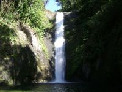
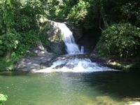
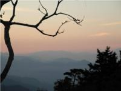
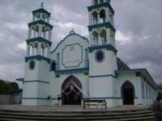
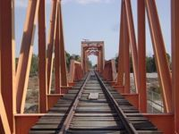
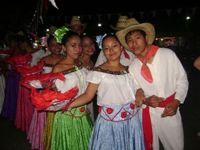

Es la población prehispánica, que posiblemente data de la invasión azteca cuando reinaba Ahuizotl, pero no se encuentra una fuente positiva que precise su fundación. En 1831, tropas guatemaltecas incursionaron al territorio chiapaneco y atropellaron a los habitantes de Acacoyagua. En 1873, se denunció y registró la mina de plata El Porvenir, agencia Municipal de Acacoyagua. En 1908, desaparece como municipio libre. Por decreto del 3 de noviembre de 1926 se elevaron a agencias Municipales de Acacoyagua las rancherías Los Cacaos y La Libertad. El 3 de enero de 1934, por decreto del gobernador Victórico R. Grajales, aparece Acacoyagua como agencia Municipal de Escuintla. Por decreto del 10 de noviembre de 1947, del gobernador César A. Lara, se eleva a Municipio de tercera categoría.
Atractivos Culturales y Turísticos.Monumentos Históricos Cuenta con el parque central de Acacoyagua el cual tiene figura y estilo japonés.
Parque CentralFiestas, Danzas y Tradiciones
Las celebraciones más importantes son las de: San Marcos, Virgen del Carmen y San Mateo.
Danzas
La costa del municipio brinda al visitante maravillas naturales, como barras, esteros y playas. En la Costa del municipio puede practicarse el deporte de la pesca en los lugares denominados: Chantuto, Los Cerritos, El Campóm y Panzacola. Dentro de esta área se ubica la reserva ecológica de la biósfera El Triunfo.
LocalizaciónEl municipio de Acacoyagua se ubica al Sureste del Estado de Chiapas en la Región socioeconómica denominada Soconusco, la localización de la Cabecera Municipal es de 15° 20’ 17’’ latitud norte y 92° 40’ 33’’ longitud oeste, con una altitud (70 o 80) msnm, la temperatura promedio es de 27°C.
PoblaciónEn 1990 la población total del municipio era de 11, 736 habitantes de los cuales 6,106 eran hombres y 5630 mujeres y en términos de porcentajes la población total de Acacoyagua representa un 0.3655% de la población del estado de Chiapas.
La población total es de 14, 189 habitantes, represente el 0.36% de la estatal el 51.28%de la población son hombres, el 48.72% son mujeres. Su estructura es predominantemente joven el 70% de la población son menores de 30 añosy la edad mediana es de 17 años.En lo que va del censo de 1990 al 2000; la tasa media Anual de Crecimiento es de 1.95%, en el indicador en el Ámbito Regional y Estatal es de 1.41% y 2.06% respectivamente.
La población total es de 15 a 17 años de edad es de 1,081 habitantes. La población de 15 años y más en el municipio es de 8,075 habitantes, y la población de 18 años de edad en el municipio de Acacoyagua es de 6,994 habitantes.La población total del municipio se distribuye de la sig. Manera el 40.32% en localidad urbana y el 59.68% en localidades rurales, un total de 92 comunidades rurales y 1 urbana.
ClimaEl clima que predomina es el cálido húmedo en las partes bajas, el semicálido húmedo en las zonas altas y el templado húmedo en una pequeña parte con altitudes mayores a los 2000 metros. Las lluvias son abundantes en el verano en todo el municipio. Por sus características fisiográficas, la parte costera presenta fuertes vientos con dirección de suroeste a noroeste. Su precipitación pluvial anual es de 3600 mm.
HidrologiaLa conforman las aguas de corriente que bajan de la Sierra Madre. Los ríos principales son: El cacaluta y su afluente el Boquerón, y cinta lapa; y otros son el Ulapa, Chicol, Jalapa, Doña Maria, Madre Vieja, Rio Grande y Cangrejero
Cascada
Galeria de Imagenes
     
{kind=link}
{kind=link}
{kind=link}
{kind=link}
{kind=link}
{kind=link}